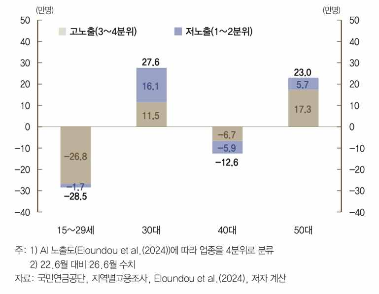
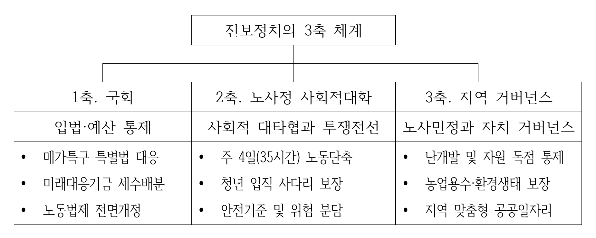

AI전환의 세계사적 격변
1. 전대미문의 체제갈등의 서막과 정치투쟁의 필연성
2026년 4월 9일, OpenAI가 13쪽짜리 정책 제안서 〈산업 정책: 지능의 시대를 사람 중심으로〉를 발표했다.[1] 우리식으로 하면 ‘인간중심 AI전환’으로 해석할 수 있다. 로봇세와 초과이윤세 부과, AI 국부펀드 조성, AI로 대체된 노동자들을 돌봄·교육·헬스케어 등에 재배치하고 그를 위해 재교육 정책을 하자며 ‘이것이 모든 미국인을 부자가 되게 하는 방안’이라고 밝혔다. 두 달 뒤인 6월 8일 트럼프 대통령은 샘 올트먼의 제안 중 AI국부펀드 구상을 “아름다운 일”이라며 추켜세우며 적극적인 지지를 보냈다.
같은 시기 대한민국 정부의 물밑 행보 역시 긴박하게 돌아가고 있었다. 1,500조 원 규모의 민간 투자를 유치하기 위해 삼성·SK·현대차 등 대기업 총수진과 비공개 조율을 마치고, ‘AI 데이터센터 특별법’ 초안 작성과 거대 메가프로젝트의 예비타당성조사 면제 방안을 서둘러 검토하던 때였다. 서남권 반도체 메가팹과 18.4GW 규모의 초대형 데이터센터, 새만금 로봇 파운드리를 잇는 ‘대한민국 3대 메가프로젝트’의 청사진을 완결 짓기 위해 국가 전체의 전력망과 재정이 자본 주도 인프라로 빠르게 재편되고 있었다. 2026년 6월29일 이재명 대통령은 국민보고회라는 이름으로 이 거대한 계획을 세상에 알렸다.
태평양을 사이에 두고 테크 독점자본의 수장과 국가 정책 엘리트들이 일제히 ‘사람 중심’과 ‘국가대표 AI 도약’이라는 화려한 구호를 쏟아내는 광경은 깊은 위화감을 남긴다. 많은 이들이 간파하고 있겠지만, 미국의 빅테크와 대한민국 정부가 입을 모아 말하는 AI 기술진보는 결코 중립적인 공공재가 아니다. 그 이면에는 막대한 전력과 용수의 독점, 예비타당성 조사 면제라는 제도적 특혜, 그리고 철저히 치외법권화된 사적 데이터센터의 확장이 자리 잡고 있다. 인류가 축적한 지식과 현장 노동자의 땀을 무단으로 끌어와 거대 플랫폼을 짓고, 시민을 영구적인 종속 이용자로 묶어두려는 자본의 계산을 가볍게 봐서도 안된다.
‘모두의 AI’와 ‘소버린 AI(AI 주권)’라는 애국주의적 구호가 등장하는 순간, 자본의 인프라 확장 뒤에 숨은 노동 배제와 생태 파괴는 국가 경쟁력이라는 이름 뒤로 지워진다. 재벌 대기업과 빅테크에는 천문학적 특혜를 몰아주면서, 정작 그 기술로 인해 일자리 사다리가 끊겨나갈 청년과 노동자의 자리는 잘 보이지 않는다.
정확한 시점과 관련해선 많은 이견이 존재하지만 기술의 질주는 이미 문명적 임계점에 다가서고 있는 것은 분명하다. 전 OpenAI 연구원 레오폴드 아셴브레너는 연산량과 투자 규모의 성장 추세를 볼 때 2027년이면 AI 연구원 수준의 AGI가 등장하고 2030년 이전에 통제 불가능한 '지능 폭발(초지능)' 단계에 진입할 것이라 경고한 바 있다.[2] 그 순간이 오면 기술의 궤적은 인간 사회의 제어를 영영 벗어날지도 모른다. 예컨대 챗GPT-7이 챗GPT-8을 만들고, 챗GPT-8이 다시 챗GPT-9를 만드는 식으로 스스로 엄청나게 빠른 속도로 발전하는 것이다.
이 시점에서 우리에게 익숙해진 수동적인 챗GPT와 제미나이 같은 거대 언어모델(LLM)은 바로 구시대 유물이 될 것이다. 지금 우리가 이야기하는 AI전환은 스스로 목표를 설정하고 적극적으로 세상에 나가 추구할 수 있는 AI 시스템으로의 거대한 전환이다. 그리고 이런 인공지능에 로봇 몸체를 부여하면, 수십억 명의 인간보다 똑똑한 로봇들이 지구를 돌아다니면서 우리가 이해조차 못 하는 온갖 일들을 하게 될 것이고, 우리는 지구에서 일어나는 일들을 통제할 수 없게 될 거라는 불길한 미래를 마주대하고 있다.
실리콘밸리의 장밋빛 낙관론은 물론, 진보 진영 일각의 기술 유토피아주의 역시 사태의 본질을 보지 못한다. 기술은 스스로 공정해지지 않는다. 지금 마주한 위기는 단순한 일자리 축소나 사후 지원금 배분의 문제가 아니다. 초지능이라는 폭발적 생산력과 거대한 인프라, 그리고 사회적 결정권을 누가 쥘 것인가를 둘러싼 문명사적 권력 갈등이다. 이 갈등은 자본과 노동, 체제의 미래를 가르는 격렬한 정치투쟁과 계급투쟁을 동반할 수 밖에 없다.
2. 세계적 석학들이 경고하는 AI전환에 대한 문명의 위기
기술의 자율적 가속은 사회의 근간을 뒤흔들며 다층적인 문명적 위기를 촉발하고 있다는 우려 섞인 분석은 전 세계 석학들에게 진지한 관심 대상이다. 정치, 경제, 환경 등 우리 사회 주요 영역에 대한 학자들의 경고를 아래 8가지로 나누어 간략하게 소개한다.
1) 경제_ 대런 애쓰모글루 '어설픈 자동화와 노동 배제의 덫'
2024년 노벨경제학상 수상자인 MIT 대학의 대런 애쓰모글루 교수는 기술 혁신이 생산성 혁명 없이 인간 노동자만 내쫓는 '어설픈 자동화(So-so Automation)'에 갇혀 있다고 경고한다. 과거 산업혁명과 달리 현대의 AI 전환은 새로운 인간 일자리를 만들어내는 '복원 효과'는 미약한 채, 지식 노동과 숙련 노동을 동시에 없애는 '대체 효과'만 폭주하고 있다는 주장이다. 대런은 자본이 인간 역량을 강화하기보다 노동 배제에 매몰될 때, 대규모 실직과 노동소득 분배율 추락으로 이어져 거시경제 전체가 총수요 붕괴의 덫에 빠지게 된다고 경고했다.
유사한 주장으로 2026년 초 공개된 월가의 한 보고서는 시장에 충격을 안겨주었다.[3] 모든 기업이 AI를 도입해 고용을 줄이면 대규모 실직으로 소비가 사라지고, 매출이 줄어든 기업은 다시 AI 의존도를 높이는 '지능 대체 나선'에 갇힌다는 것이다. 이는 신용도가 높은 화이트칼라 계층의 몰락, 예컨대 미국에서만 13조 달러에 달하는 모기지 상품(주택을 담보로 하는 금융상품)의 부실화를 불러 거시 금융 시스템 전체를 뒤흔든다는 비관적 전망이다.
2) 민주주의_ 유발 하라리 '대화의 붕괴와 AI 관료제의 지배’
역사학자 유발 하라리는 《넥서스》 등 저서와 일련의 강연을 통해 "민주주의의 본질은 시민 간의 대화인데, 역사상 최초로 인간이 아닌 독자적 행위자(Agent)인 AI가 문명의 운영체제인 언어를 장악했다"고 경고했다. 알고리즘이 소셜미디어와 여론의 편집권을 쥐면서 공론장은 양극화와 가짜 정보로 파괴되고 있다는 것이다. 더욱이 법률과 금융 데이터를 인간보다 완벽히 장악하는 'AI 관료제'에 통제권을 넘겨줄 경우, 인간은 전체 시스템의 작동 원리조차 이해하지 못한 채 통제당하는 '목장의 말' 같은 무력한 수동적 존재로 전락하게 된다고 일갈한다.
3) 국가 거버넌스: 닉 보스트롬의 '결정권의 외주화와 민주적 통제의 붕괴'
옥스퍼드대 철학자 닉 보스트롬[4]은 2014년 저서 《슈퍼인텔리전스》에서 사회 관리와 정책 결정을 알고리즘에 넘길수록 민주주의의 근간이 해체될 수 있다고 경고했다. 인간 정치인과 관료들은 처음에는 AI를 답을 구하는 보조 도구(오라클)로 활용하지만, 복잡한 사회 문제를 인간의 인지로 감당하지 못하게 되면서 점차 과업의 실행(지니)을 맡기고, 종국에는 정책 결정의 전권(주권자, Sovereign)까지 위임하는 '의사결정의 외주화'에 빠져들게 된다는 것이다. 선거 제도라는 형식은 유지될지라도 실질적인 통치 권력이 알고리즘에 넘어가고 감시·치안 인프라가 완전히 자동화되면, 부당한 권력에 맞서던 인간 집행자의 양심과 시민의 저항권이라는 민주주의의 최후 방어선마저 무력화된다. 통치 효율성이라는 미명 아래 사회적 합의와 공론장을 알고리즘의 최적화 연산으로 대체하려는 유혹이야말로 민주주의를 내부로부터 붕괴시키는 가장 치명적인 위협이다. 유발 하라리는 저서 《호모 데우스》에서 인구가 더 이상 국력과 노동력의 자산이 되지 못하는 시대를 경고했다. 자동화 체제에서 국가는 공동체가 아니라 소수 기술 엘리트가 잉여 인구를 관리·통제하는 장치로 변질될 위험에 처한다고 경고했다.
4) 자본주의_ 야니스 바루파키스 '테크노봉건제와 폭동 방지용 기본소득‘
전 그리스 재무장관 야니스 바루파키스[5]는 그의 저서, 《테크노봉건주의》에서 빅테크 플랫폼이 시장 참여자를 넘어 디지털 영지의 지주로 군림한다고 갈파했다. 시민은 무상 데이터 노동으로 플랫폼 자본을 증식시키는 '디지털 농노'로 전락했다. 바루파키스는 빌 게이츠의 ‘로봇세’나 실리콘밸리 테크 엘리트들의 ‘기본소득’ 구상은 시민의 자율성을 위한 것이 아니라는 시각에 서 있다. 일자리 박탈로 인한 소비 절벽과 플랫폼 경제의 붕괴를 막고, 대중의 저항을 잠재우기 위한 '체제 방어용 진통제'에 불과하다는 것이다. 생산수단과 데이터의 사적 독점을 온존시킨 채 지급되는 지원금은 시민을 영주의 처분에 묶어두는 배급 장치로 작동한다. 이는 노동의 주체성과 시민의 실질적 협상력을 거세할 뿐이라는 주장이다.
5) 군사_ 스튜어트 러셀 '자율 살상 무기와 도덕적 통제의 증발’
전세계 35개국 1500개 대학에서 저서가 교재로 활용될 정도로 세계적 명성을 쌓은 AI 석학 스튜어트 러셀 교수는 2020년 저서 《어떻게 인간과 공존하는 인공지능을 만들 것인가》를 통해 자율 살상 무기(LAWS)의 치명적 위험을 폭로했다. 러셀은 "자율 무기는 대량 전사자 발생이라는 정치적·도덕적 비용을 지워버림으로써 권력자가 전쟁을 결심하는 문턱을 극단적으로 낮춘다"고 경고한다. 명령을 거부하지 않는 킬러 로봇 군집은 특정 인구 집단을 표적 학살하는 대량살상무기가 될 수 있으며, 알고리즘 오폭에 대한 책임 주체마저 완전히 사라진다. 이 두려운 경고는 수년 뒤 우크라이나전쟁에서 현실이 되었다.
6) 인류_ 맥스 테그마크 '라이프 3.0과 인지적·신체적 종 분기'
MIT 물리학과 맥스 테그마크 교수는 저서 《라이프 3.0》에서 하드웨어와 소프트웨어를 스스로 업그레이드하는 포스트휴먼 기술의 위험성을 경고했다. 뇌-컴퓨터 인터페이스(BCI)와 초고성능 AI 보조 시스템을 독점하여 지능과 반응 속도, 수명을 극대화한 '기술 강화 계층'과 그렇지 못한 '일반 생물학적 인간' 사이에 메울 수 없는 격차가 발생한다는 것이다. 이 격차는 단순한 소득 불평등을 넘어, 사실상 동일한 도덕적·신체적 지위를 공유하지 않는 서로 다른 '종(Species)의 분기'로 이어질 수 있다고 주장했다. 유발 하라리도 유사한 주장을 펼치고 있다.
7) 인간 주체성과 삶의 의미_ 자기결정성 이론으로 본 '기본 심리 욕구의 붕괴’
심리학자 에드워드 데시와 리차드 라이언이 정립한 자기결정성 이론(SDT)에 따르면, 인간의 건강한 기능과 행복은 물질적 보상 이전에 자율성, 유능감, 관계성이라는 3대 기본 심리적 욕구에 기초한다. 이 틀을 AI 대전환에 대입하면 왜 단순 소득 보전(예컨대 AI 기본소득 같은) 만으로 인간의 존엄을 지킬 수 없는지 명확해진다. AI 에이전트가 업무의 경로를 결정하고(자율성 박탈), 인간의 숙련을 대체하며(유능감 상실), 협업과 사회적 쓸모의 자리를 대신할 때(관계성 단절), 인간은 주체성을 잃고 왜 살아야하는가, 하는 극심한 무기력과 의미의 위기에 직면하게 된다.
8) 환경_IMF 2025~2030년 17억톤 추가 온실가스 배출 유발 전망
IMF는 2025~2030년 사이에 AI 전력수요 증가로 전세계에서 17억톤(Gt)의 추가 온실가스가 배출될 것이라고 전망했다.[6] 이는 이탈리아 5년 배출량에 상당한다. 2030년 데이터센터 전력소비량이 1,500 TWh(OPEC 추산, 2023년 500 TWh의 3배)에 달하고 이는 미국 전력가격 상승 압력으로 작용해 전력 공급 반응성에 따라 가격 충격 격차가 심화될 것이라고 경고했다.[7] UN의 물환경 관련 싱크탱크인 유엔환경연구소(UNU-INWEH)는 AI 물 소비가 13억 인구 기본 연간 생활용수에 상당하고 AI 전력수요는 6.5억 인구 소비의 3배에 달할 것이라는 충격적인 보고서를 발표했다.[8] 어떤 부를 가져온다해도 지구가 감당 가능한 수치가 아니라는 의미다.
3. 글로벌 AI 패권 전쟁과 사회적 부의 사유화
1) 미·중 중심의 AI전환을 위한 ‘쩐의 전쟁’과 국가 총력전
세계는 이미 AI전환을 위한 거대한 기술·자본 전쟁의 한가운데에 있다. 미국은 5,000억 달러 규모의 '스타게이트 프로젝트'를 가동해 초거대 데이터센터와 전력망을 선점하고 글로벌 테크 패권을 영구화하려 한다. 중국은 독자 GPU 개발과 반도체 기업 매출 전액 재투자라는 강력한 국가주도 모델로 맞선다. 유럽과 일본 역시 기술주권 상실을 우려해 천문학적 보조금을 쏟아부으며 자체 파운데이션 모델과 인프라 확보에 매달리고 있다. 유발 하라리가 지적했듯, AI 인프라는 과거 제국주의 시대의 총포와 다르다. 중심부 빅테크 국가가 언제든 주변국의 시스템을 일거에 중단시킬 수 있는 '킬 스위치(Kill Switch)'를 쥐는 구조다.
2) 빅테크의 독점 가치사슬
이 전쟁의 중심에는 마이크로소프트, 구글, 엔비디아 등 극소수 글로벌 빅테크 기업이 있다. 이들은 연산 인프라(GPU), 파운데이션 모델, 글로벌 통신망을 장악했다. 엄청난 투자금에 기초해 전 세계 시민들의 데이터를 무상으로 흡수해 지능화한 뒤, 이를 다시 각국 산업 현장에 유료 구독형 에이전트로 판매하며 막대한 부를 집중시킨다.
3) '사회적 부'의 사유화와 극단적 양극화
라이언 아벤트가 갈파했듯, 현대 기업 가치의 80% 이상은 공장이나 기계가 아닌 '무형의 노하우'와 '네트워크', 즉 사회적 자산에서 나온다. AI 모델의 지능은 특정 엔지니어 몇 명의 천재성으로 만들어지지 않았다. 수십 년간 인류가 축적한 지식, 시민들이 인터넷에 남긴 기록, 산업 현장 노동자들의 땀과 경험(암묵지)이 고스란히 학습 데이터로 쓰였다. 챗GPT가 출시되기 전 코로나 펜더믹 동안에 누구에게 고용되었는지도 모르는 베네쥬엘라의 노동자들은 시간당 단돈 50센트를 받고 가정집 사진에 각 가구를 표시하는 일을 했다고 한다. 거실 사진이 있다면 소파는 소파, 거울은 거울 등으로 표시하는 식의 일인데 사람이 아니라 알고리즘의 통제를 받았다고 증언한다. 비공식통계로 이런 데이터 작업을 하는 제3세계 작업자가 1억6천만명에 달한다고 한다.[9] 테크 자본의 이윤은 안정된 공공 전력망, 법적 재산권 보호, 통신망, 그리고 전 사회적 데이터가 있었기에 가능하다. 자본은 이를 "위험을 감수한 혁신에 대한 정당한 보상"이라 강변하지만, 이는 부가 창출되는 사회적 기반을 은폐하는 논리다. 사회 전체가 함께 만든 '사회적 부'를 소수 플랫폼과 자본이 사유화하면서, 노동에 분배되는 몫은 끝없이 추락하고 있다.
4) 2026년 한국 사회가 마주한 거대한 질문
세계적 자본의 질주는 경제와 노동 시장을 거세게 압박하고 있다. 우리가 직면한 진짜 과제는 기술 진보에 대한 맹목적 공포나 거부가 아니다. 마찬가지로 기술이 모든 문제를 해결해 줄 것이라는 기술 낙관주의도 배격해야 한다. 자본이 주도하는 기술 가속에 끌려다니지 말고 인간 사회가 통제할 수 있는 규범과 제도를 지금 설계하는 것이다.
AI전환은 역사상 가장 위대한 평등화 도구가 될 수도 있고, 최악의 불평등의 원천이 될 수도 있다. 한국의 진보정당은 이 거대한 AI 전환의 결실은 누구의 것이며, 누가 무엇을 가질 것인지 따지고 물으며, 궁극적으로 평등화의 도구로 전환시켜야한다.
- [1] Industrial Policy for the Intelligence Age: Ideas to Keep People First, OpenAI, 2026년 4월
- [2] 레오폴드 아셴브레너의 165쪽 분량 에세이 〈상황 인식: 앞으로의 10년(Situational Awareness: The Decade Ahead)〉(2024년 6월 공개)
- [3] Citrini research: S&P 500 to drop 38% from 2026 highs by June 2028
- [4] 스웨덴 출신의 철학자로, 영국 옥스퍼드 대학교 철학과 교수이자 '인류미래연구소(Future of Humanity Institute, FHI)' 설립자. 2014년 출간한 《슈퍼인텔리전스》는 뉴욕타임스 베스트셀러에 올랐으며, 일론 머스크, 빌 게이츠, 스티븐 호킹등이 일제히 "AI의 위험성을 이해하기 위해 반드시 읽어야 할 책"으로 극찬하면서 전 세계적 AI 안전 담론을 촉발시켰다.
- [5] 2015년 그리스 경제위기 당시 시리자(급진좌파연합) 정부의 재무장관으로 임명되었다. EU 집행위원회, 유럽중앙은행(ECB), IMF로 구성된 이른바 '트로이카(Troika)'의 가혹한 긴축재정 요구에 정면으로 맞서며 유로존 전체의 금융 패권과 신자유주의적 긴축 정책의 모순을 전 세계에 폭로했다.
- [6] 재생에너지 정책을 적극 도입할 경우에는 13억톤 수준으로 제한할 수 있다고 부연했다.
- [7] Power Hungry: How AI Will Drive Energy Demand, 국제통화기금(IMF), 2025.4.
- [8] Environmental Cost of Artificial Intelligence: Carbon, Water ..., UNU-INWEH, 2026.6.
- [9] 안토니오 카실리, 로봇을 기다리며: 자동화의 고용된 손길, 시카고 대학교 출판부 (2025)
한국 노동시장의 해체와 새로운 계급 균열
1. 칼 폴라니의 경고: 통제 없는 기술 질주와 노동의 파괴
역사는 기술 혁신이 저절로 평온한 번영을 가져오지 않았음을 보여준다. 18세기 산업혁명이 그러했다. 공장제 기계공업은 생산력을 비약적으로 끌어올렸으나, 수많은 수공업 장인과 농민을 빈민과 도시 슬럼으로 내몰았다.
경제학자 칼 폴라니는 저서 《거대한 전환》에서 시장과 기술의 논리가 사회적 통제 없이 질주할 때 인간과 자연은 단순한 상품으로 전락하고 공동체의 터전은 파괴된다고 갈파했다. 2026년 한국 사회가 마주한 AI 대전환 역시 이 경로를 밟고 있다. 전문직부터 생산직까지 인간의 숙련과 노하우는 AI 모델의 학습 데이터로 흡수된 뒤 폐기된다. 생산 현장에서 인간 노동의 자리는 급격히 지워지고 있다.
2. 빗나간 예측과 청년 입직 기회의 봉쇄
AI와 로봇 기술이 현장의 위험을 줄이고 노동자의 안전을 개선해줄 것이라는 기대는 매우 보편적이다. 실제 긍정적 사례도 확인된다. 포스코 포항 제강공장에서는 1,600도 고온과 유독가스 속에서 진행되던 위험천만한 쇳물 작업을 AI가 센서 데이터로 계산·제어하도록 전환했다. 이 과정에서 숙련공들은 통합운영실에서 공정을 모니터링하고 이상 징후를 판단하는 운용 관리자로 역할을 바꿨다. 삼성물산 건설 현장 역시 고소 철골 기둥의 유독성 내화재 도장 작업을 로봇으로 대체하고, 기존 작업자를 지상 원격 제어 및 안전 감독관으로 전환 배치했다. 중공업 현장의 지능형 CCTV는 작업자의 위험 구역 접근과 보호구 미착용을 실시간 감지해 중대재해를 억제하는 성과를 냈다.[10] 하지만 해석에 유의해야한다. 막대한 설비 투자 여력과 강력한 노동조합의 고용 방어력을 갖춘 소수 대기업 정규직 중심의 현장에서나 가능한 '예외적 축복'이기 때문이다. 자금력이 없는 중소 영세 사업장이나 하청 현장까지 보편적으로 확산되기 어렵다.
기술 발전이 만성적 구인난에 시달리던 3D·육체노동을 먼저 해방시켜 줄 것이라던 장밋빛 기대와 달리, 실제 AI 전환의 직격탄은 청년들이 오랫동안 선호해 온 고학력 지식기반 노동의 문턱부터 거세게 무너뜨리고 있다. 자본의 논리라면 고가의 피지칼AI 투입으로 저임금 노동을 대체할 동기를 찾을 수 없다. 시급 1만원이면 가능한 일을 고가의 로봇으로 교체할 이유가 어디 있겠는가. 한국은행 고용연구팀의 노동시장 분석 보고서(2026년 8월)는 청년 노동시장에 닥친 충격을 명확한 수치로 보여준다.[11]
보고서에 따르면 청년 일자리 감소의 94%가 AI 고노출 업종[12]에 집중되었다. 최근 4년간(2022년 6월~2026년 6월) 15~29세 청년 일자리는 총 28만 5천 개 감소했다. 이 중 94%에 달하는 26만 8천 개가 AI 노출도가 높은 업종에서 사라졌다. 지식기반 청년 선호 업종인 정보서비스업에서 -31.4%, 출판 및 저작업에서 -27.4%, 소프트웨어 및 프로그래밍에서 -16.6%로 확인되었다. 모두 전문대 졸 이상의 고학력 직종이다. 이 감소추세는 4년 동안 상승했고 향후 4년은 더 빨라질 것이다. 이 속도라면 향후 4년 뒤에는 남은 고학력 신규 일자리가 0에 수렴될 수도 있다는 의미다.

기업들은 신입사원을 채용해 훈련시키는 대신 초거대 AI 에이전트를 도입하고 있다. "신입 직무는 정형화된 지식을 다루기 때문에 AI로 대체하기 가장 쉽다"는 업계의 판단 아래 신규 채용 문이 닫혔다. 사회에 첫발을 내딛는 청년 세대는 노동을 통해 경력을 쌓고 자아를 실현할 ‘입직 사다리’ 자체를 박탈당했다. 모두가 기피하는 3D업종이 아니라 고학력 신규일자리가 먼저 대체됐다. 시작부터 예측은 빗나간 것이다.
3. 숙련의 절벽과 중장년·하청 노동자의 추락
한국은행 보고서에 따르면 청년층의 AI 고노출 업종에서 청년층의 취업은 크게 감소한 반면, 같은 기간 50대 일자리는 늘어났다.(위 그림 17.3만개 일자리 증가) 하지만 AI 전환이 고도화되면 될수록 고용충격은 청년층에만 머물지 않게 될 것이다. AI가 인간의 업무를 보조하는 증강 방식보다 자율성을 갖추고 스스로 자동화하는 단계에서는, 4050 중장년 숙련 노동자들이 수십 년간 쌓아온 전문성이 단기간에 무력화되는 ‘숙련의 절벽’에 직면할 것이다. 지식 노동과 관리 직무에서 밀려난 중장년 노동자들은 플랫폼 노동 등 불안정 노동시장으로 밀려나며 중위소득 정체와 빈곤의 악순환을 겪을 것이다.
제조 현장 역시 급격히 재편될 것이다. 대기업 완성차와 전자 공정을 중심으로 휴머노이드 로봇(피지컬 AI) 도입이 본격화되면서 원·하청 간 불평등이 극대화된다. 대기업 정규직 노동자들은 강력한 노동조합의 교섭력과 제도적 대항력을 바탕으로 정년까지 고용을 일정하게 방어해 낼 것이다. 반면 원청에 종속된 2·3차 벤더 및 부품 협력업체의 사정은 완전히 다르다. 부품 통합과 조립 자동화로 납품 물량 자체가 줄어들고 원청의 납품 단가 인하 압박은 한층 거세지게 된다. 고가의 피지컬 AI를 도입할 자금력도, 고용을 방어할 노조도 없는 하청업체는 결국 일방적인 인원 감축과 비정규직 계약 해지로 위기를 떠안는다. 대기업의 기술 전환에 따른 충격과 비용이 하청 노동 생태계의 파괴로 고스란히 전가되는 구조다.
4. 2026년 새로운 계급선의 형성: AI 내부자와 배제된 외부자
1997년 외환위기가 노동자 내부에 정규직과 비정규직이라는 이전에 없던 선 하나를 새로 그었다면, 1990년대부터 본격화한 세계화는 대기업과 중소기업, 대기업 내에서도 수출기업과 내수기업의 격차를 크게 벌려놨다. 지금 진행되고 있는 AI 전환은 'AI 생태계 내부자'와 '배제된 외부자'라는 지금까지의 선 보다 훨씬 굵고 강력한 계급선을 긋게 될 것이다. 이제 노동자들은 AI 생태계를 주도하는 글로벌 대기업의 정규직과 나머지들로 나뉘어질 것이고 이 격차는 지금까지의 양상과 완전히 다른 구조를 갖게 될 것이다.
정부는 18.4GW 규모의 초거대 AI 데이터센터(AIDC) 구축(550조 원 투자)과 서남권 반도체 메가팹 조성(800조 원 투자)으로 대규모 건설·플랜트 일자리가 생긴다며 장밋빛 전망을 홍보한다. 그러나 토목 공사 기간에 반짝 늘어난 건설 임시직으로 임기 내 고용지표가 일부 개선될 수 있겠지만 인프라 완공 후 고도로 자동화된 데이터센터와 팹 내부에서 대다수 민중이 누릴 수 있는 양질의 지속 가능한 일자리로 정착하는 숫자는 극히 드문 사례가 될 것이다. 이미 확인된 데이터가 있다. 세계 최대규모 반도체 생산단지인 삼성전자 평택캠퍼스 안에는 정규직노동자 1만명과 사내하청노동자 4만명, 건설플랜트 노동자 2만명이 근무한다. 이 중 정규직 1만명을 제외하고는 모두 비정규직이고 사내하청노동자의 경우는 1년단위 도급계약에 묶인 최저 임금 선상의 노동자들이다. 한쪽에서 6억 성과급을 받을 때 최대 250만원 성과급도 경쟁을 통해 극히 일부만 받는 정글 속에서 일하고 있다. 메가 프로젝트 완공 이후의 세상이 삼성전자 평택캠퍼스의 오늘보다 더 극단적인 불평등이 다가올 청년의 미래가 아니라고 누가 장담할 수 있겠는가.
기술 진보라는 흐름 자체를 거부할 수는 없다. 그러나 자본 주도의 노동 배제적 메가프로젝트를 방치한다면, 생산력의 비약은 민중의 고용 붕괴와 청년의 절망으로 귀결된다. 이 파괴적 궤도를 멈추고 노동의 자리를 지키기 위한 사회적·정치적 개입을 진보정당이 해야한다.
각계의 모색과 진보적 3축 대화체계의 돌파구
1. 글로벌 테크 권력과 정치 지형의 대응 모델
AI 대전환이 몰고 올 충격 앞에서 테크엘리트, 세계 각국과 각 정치 진영은 저마다의 타협책, 생존 전략과 처방을 내놓고 있다. 이 대응들은 대체로 6가지 흐름으로 집약된다.
1) 테크 독점자본의 타협안
OpenAI는 2026년 4월 정책 제안서 〈지능 시대를 위한 산업 정책: 사람 중심의 아이디어〉를 발표했다. 이들은 초지능 전환이 일자리 파괴와 부의 극단적 집중, 조세 기반 붕괴를 초래할 수 있음을 인정했다. 이에 대한 해법으로 정부와 기업이 협력해 국부펀드를 만들고 그 수익을 시민에게 배당하자고 제안했다. AI 접근성을 전기나 수도처럼 보장하는 'AI 기본권', 생산성 향상을 바탕으로 한 '임금 삭감 없는 주 32시간(주 4일제) 시범 도입', 돌봄과 교육 등 '인간 중심 경제 지원'도 함께 담겼다. 얼핏 진보적으로 보이는 이 제안은 거대한 독점 권력을 지키기 위한 고도의 사전 방어막이다. 초거대 데이터센터와 알고리즘 통제권은 빅테크의 사적 소유로 남겨둔 채, 약간의 금융 배당과 복지 혜택을 쥐여주어 대중을 영구적인 플랫폼 종속자로 묶어두려는 의심을 거두기 어렵다.
2) 도널드 트럼프를 중심으로 한 국가자본주의와 안보 포퓰리즘
이들은 AI와 첨단 반도체를 대중국 패권 경쟁과 군사·경제적 우위를 지키기 위한 핵심 안보 무기로 규정한다. 빅테크의 자발적 공여를 기다리지 않고, 국가 안보를 명분 삼아 인텔(9.9%), 핵심 광물 및 테크 기업 지분을 국가가 직접 확보하며 자국 내 인프라 투자를 강제한다. 미국정부는 AI 개발에 대해 자율감시에 의존하고 있다. 혹자는 샌드위치에 대한 식품안전규제보다 AI 규제가 더 적다고 말한다. 노동자의 권리나 민주적 통제와 거리를 두고 정반대의 무모한 개입, 즉 국가 권력과 빅테크 군산복합체를 결합해 대외 패권과 관세 장벽을 쌓아 올리는 비정상성을 극대화하고 있다.
3) 버니 샌더스의 'AI 국부펀드법(50% 주식 과세)'으로 대표되는 급진적 사민주의
샌더스는 AI가 수십억 인류의 집단 지성과 노동 데이터를 무단 전유해 만든 '인류 공통의 자산'이라고 규정한다. 이에 따라 대형 AI 기업에 50% 신주를 과세하고, 노동자 대표가 참여하는 독립위원회를 통해 이사회 의결권을 행사하며 연 5% 국민 배당을 실시하자는 방안을 내놓았다. 단순한 시혜적 배당을 넘어 기업 경영권과 의사결정에 직접 개입하려 한 진일보한 시도다. 그러나 펀드 재원이 기업 주가에 종속되는 태생적 한계와, 국가 관료제 중심의 대리 통제 위험을 온전히 지우지는 못했다.
4) 진보 연구자들이 주도하는 공공 인프라화 접근[13]
진보정당 당원들에게는 상대적으로 익숙한 주장들이다. 이들은 사후적 소득 분배나 기본소득만으로는 노동 소외와 자본의 데이터 독점을 막을 수 없다고 본다. 초거대 데이터센터(AIDC)와 연산 자원을 전력망이나 수도처럼 사회적 공공재로 운영해야 한다고 요구한다. 나아가 알고리즘 투명성 강제, 노동시간 단축(주 4일제), 데이터 주권의 시민 환원을 주장한다. 기술 통제의 본질을 짚고 있으나, 막대한 자본과 전력이 소모되는 물리적 인프라를 공공 재정만으로 어떻게 구축하고 운영할 것인지에 대한 구체적 이행 경로가 취약하다.
5) 중국 공산당식의 '당-국가 주도 기술 통제' 모델
중국 정부는 AI를 국가 안보와 체제 안정, 미래 산업 주도권을 위한 핵심 전략 자산으로 다룬다. 민간 빅테크 기업에 1% 안팎의 특수 관리 지분인 '황금주(골든셰어)'를 확보해 이사회 참여와 알고리즘 검열 권한을 행사하는 방식이 대표적이다.[14] 국가인터넷정보판공실(CAC)을 통해 알고리즘 등록제를 시행하며 당의 지도 이념을 시스템에 직접 반영한다. 국가가 자본의 사적 독점을 강하게 제어하지만, 시민 사회의 자율적 비판이나 노동자의 독자적 권리가 개입할 여지는 제한적이다. 일부의 추정이지만 북한(조선) 지도부도 유사한 노선을 준비중인 것으로 파악되고 있다.
6) 노동조합과 시민 행동주의가 결합한 '현대판 기계 파괴 운동(네오러다이트)'과 기술 감속주의 흐름
이들은 인간을 넘어선 AI 개발이 노동의 가치를 파괴하고 사회적 재앙을 부를 것이라 경고한다. 2023년 미국 할리우드 작가조합과 배우조합이 AI의 일자리 대체를 거부하며 벌인 대규모 총파업, 무인 로봇택시 센서 위에 안전 고깔을 얹어 차량을 마비시킨 샌프란시스코 시민단체의 직접행동이 대표적 사례다. 나아가 국제 시민 네트워크인 '퍼즈AI' 등은 고위험 프론티어 AI 훈련의 전면 유예와 개발 속도 조절을 요구하고 있다. 기술 질주의 위험성을 강렬하게 고발하고 있으나, 글로벌 패권 경쟁과 자본의 속도전 속에서 단순한 '개발 중단' 구호만으로는 실질적인 제도적 대항력을 갖기 어렵다.
2. AI 대전환 갈등의 5대 핵심 층위와 진보정치의 과제
결국 전 세계와 한국 사회에서 벌어지는 모든 논의와 갈등은 아래 열거하는 다섯 가지 핵심 층위 안에서 움직인다.
첫째는 인간이 주체가 되어 AI를 도구로 통제할 것인가(켄타우로스), 아니면 거꾸로 인간이 알고리즘의 지시에 종속된 부속품으로 전락할 것인가(역켄타우로스)를 다투는 '주체성과 인간-기계 관계의 통제' 층위다. 둘째는 외산 빅테크의 식민지화를 막고 자국어와 문화를 지키겠다는 명분 뒤에서, 시민 데이터 학습과 기업 특혜를 둘러싸고 충돌하는 '기술 주권 및 데이터 주권' 층위다. 셋째는 5% 국부펀드나 50% 과세, 혹은 51% 공기업화처럼 알고리즘과 인프라의 소유권과 경영 통제권을 누가 쥘 것인가를 가르는 '소유와 운영 자본에 대한 통제권' 층위다. 넷째는 청년 입직 사다리 붕괴, 중장년 숙련의 절벽, 주 4일 노동시간 단축, 그리고 24.7GW 전력망과 수자원 고갈을 둘러싼 '일자리와 생태·환경' 층위다. 다섯째는 18.4GW 초대형 AIDC 건립과 송전탑 건설 등으로 터전을 위협받는 지역 주민들의 결사반대와 난개발, 그리고 막대한 토건 이권을 둘러싼 '지역 현장의 갈등과 저항' 층위다.
그리고 이 다섯 가지 층위의 바깥에, AGI 개발 전면 중단이나 기술 보이콧을 외치는 근본주의적 '체제적 저항'이 자리하고 있다.
| 핵심 층위 | 주요 쟁점 및 충돌 지점 | 진보정치의 개입 및 전환 과제 |
|---|---|---|
| 1층위: 주체성·인간-기계 관계 | • 켄타우로스(인간 주도 도구화) vs 역켄타우로스(알고리즘 종속): 전 인류적 논쟁 | • 알고리즘 통제권 확보 및 노동 과정의 인간 주체성 확립 |
| 2층위: 기술 주권·데이터 주권 | • 미국 빅테크 종속 방어 vs 국내 대기업 데이터 무단 학습 및 특혜 | • 시민 데이터의 공공성 보장 및 데이터 주권의 민주적 통제 |
| 3층위: 소유·운영 자본 통제권 | • 사적 독점 유지 vs 5% 국부펀드 vs 50% 과세 vs 51% 공기업화 | • 국가대표 AI 및 AIDC의 51% 이상 지분 공기업화 |
| 4층위: 일자리·생태·환경 | • 입직 사다리 붕괴, 숙련 절벽, 24.7GW 전력·용수 고갈 위기 | • 청년고용 국가책임제, 주 4일(35시간) 단축, 엄격한 생태 기준 강제 |
| 5층위: 지역 현장 갈등·저항 | • 18.4GW AIDC 건립 및 송전탑 건설 난개발, 토건 이권 충돌 | • 지역 거버넌스를 통한 일방적 인프라 폭주 차단(구글에 맞선 칠레) |
| ※층위 밖 체제적 저항 | • AGI 개발 모라토리엄, 직접 행동, 신(neo)러다이트 기술 보이콧 | • 단순 거부를 넘은 체제적 저항 |
완전히 새로운 아이디어는 없다. 사람들이 생각할 수 있는 모든 대응과 갈등은 제시한 5개의 층위 안에서 약간의 변주(수치 조정 등)의 방식으로 돌아갈 것이다. 진보정치의 과제는 공허한 기술 거부에 머물거나 사후적 시혜 배급에 취해서도 안된다. 기술 주체성의 확보(1층위), 데이터의 공공성(2층위), 기업의 소유와 운영권(3층위), 청년고용 국가책임제와 주 4일제 및 생태 기준 강제(4층위), 지역 거버넌스를 통한 난개발 통제(5층위)라는 층위에서 크고 작은 투쟁이 벌어질 것이다.
첫 번째 층위는 인류 모두의 투쟁이기 때문에 대한민국 진보정치의 고유성이나 독자성을 주장하는 것은 어려울 것이다. 최근에는 빌 게이츠(마이크로소프트)도 AI가 분자 조합으로 인류를 위협할 강력한 생물테러를 일으킬 수 있다며 강화된 공공적 통제 하에 둬야한다고 주장하고 있다. 이 층위에서 빌 게이츠와 한국의 진보정당은 한 편이 될 수도 있다. 둘째 층위 즉 기술주권 및 데이터주권 문제는 이재명 정부가 사활을 걸고 추진하는 독자 AI 파운데이션 모델(독파모) 구상과 맥을 같이 할 수 있다. 상황에 따라 정부와 기업, 국민이 하나의 기대와 바람 위에 있을 수 있다. 세 번째부터 다섯번째 층위에서는 치열한 정치투쟁, 계급투쟁, 주민항거가 벌어질 수 있다. 변수가 많아 복잡한 전선을 하나로 묶어내기는 어렵지만 적어도 3개의 층위에서의 주도세력은 다름 아닌 진보정당이어야한다. 진보정당이 실질적인 대항력을 발휘할 수 있는 제도적 길목을 장악하고 정책의 중심을 바로잡아야 한다.
3. ‘3축 체계’의 구축과 민주적·노동친화적 AI 전환의 돌파구
정부와 거대 자본은 1,500조 원 규모의 국책 인프라 투자와 'AI 기본사회'라는 장밋빛 청사진을 앞세워 속도전을 펼치고 있다. 그러나 예비타당성조사 면제와 '규제 제로구역' 메가특구 조성, 24.7GW의 전력과 용수 몰아주기로 추진되는 일방적 메가프로젝트는 커다란 갈림길에 서 있다. 이 거대한 전환의 경로가 자본의 논리에 그대로 맡겨질 것인지, 아니면 사회적 통제와 노동의 권리를 담아내는 공간이 될 것인지는 오직 우리의 정치적 개입과 투쟁에 달려 있다.
이에 발맞춰 현장에서는 이미 광범위한 사회적 비판과 문제제기가 분출하고 있다. 2026년 7월, 참여연대, 환경운동연합, 민주노총 등 136개 노동·환경·시민사회단체는 공동성명을 통해 정부의 3대 메가프로젝트를 '민주주의 훼손, 기후·생태 파괴, 농민 생존권 위협, 노동권과 노동안전을 도외시한 개발 폭주'로 규정하며 전면 재검토를 촉구했다.[15]
하지만 원내 진보정당의 역할은 장외 시민사회의 규탄에 단순히 머무는 것일 수 없다. 시민사회가 개발 폭주에 제동을 걸며 사회적 경각심을 환기하는 주체라면, 진보정치는 분출하는 사회적 요구를 제도적 언어로 전환해 실질적인 법과 제도를 바꾸어내는 '독자적 대안 교섭자이자 투쟁의 주체'여야 한다. 시민사회의 근본적 문제의식을 경청하며 사회적 긴장감을 개혁의 동력으로 삼되, 정당 고유의 책임성을 가지고 현실적 대안을 쟁취하는 '3축 체계(국회 — 노사정 사회적대화 — 지역 거버넌스)'의 길목을 장악해야 한다.

1) 제1축 : 입법·예산 통제
제1축인 국회에서는 입법과 예산 권한을 활용해 제도적 틀을 구축하고 초과세수 배분과 자본 통제를 둘러싼 공방과 협상에 집중한다. 시민사회가 지적하는 '규제 제로' 특혜와 환경영향평가 무력화 시도를 통제하고, 기업의 사회적 책임과 엄격한 사전 검증을 강제할 메가특구 특별법 수정 대안을 마련해야 한다. 또한 정부는 반도체 호황에 따른 추가·초과세수를 별도 기금으로 묶어 절차를 간소화하고 메가프로젝트 인프라 등에 투입하려 한다. 국회는 이를 행정부의 일방적 집행에 맡겨둘 것이 아니라, 기술 전환의 과실이자 막대한 초과세수를 청년 일자리 보장, 사회적 안전망, 불평등 해소에 어떻게 배분할 것인가를 핵심 쟁점으로 삼아 치열하게 다퉈야 한다. 나아가 플랫폼 노동과 AI 대체 등 급변하는 산업 현장을 반영하지 못하는 낡은 노동법제를 개정해, 새로운 기술 환경에 맞는 보편적 노동권 보장을 강력히 견인해야 한다. 이를 위해 진보정당의 원내교섭력을 키우기 위한 확장적 연대노력도 병행되어야한다.
2) 제2축 : 사회적 대타협과 투쟁전선
제2축인 노사정 사회적 대화에서는 노사정이 마주 앉아 기술 전환에 따른 고용 충격과 노동안전을 사회적으로 분담하는 대화와 투쟁의 장을 열어야 한다. 정부가 메가프로젝트 추진을 명분으로 시도하는 '주 52시간 적용 유예' 등 노동개악 시도를 철저히 차단해야 한다. 동시에 AI 도입에 따른 생산성 향상을 '노동시간 단축(주 4일제)과 일자리 나누기'로 연결하는 방안을 전면에 올려야 한다. 기업들이 신규 채용을 기피하며 청년 세대의 입직이 원천 봉쇄되는 현실을 타개하기 위해 청년 입직 기회를 국가와 사회가 공동으로 보장하는 사회적 협약을 제시해야 하며, AI 반도체 기업들의 초과이윤이 원하청과 협력사 전체 노동자가 함께 상생할 수 있는 방안도 찾아야한다. 중대재해를 예방할 안전 기준 강화와 숙련 단절 및 하청 노동자 감원 위험을 막기 위한 안전망을 강력히 요구해야 한다. 민주노총은 20년 넘게 노사정 대화기구에 참여하고 있지 않지만 현 집행부(양경수 위원장)가 대의원 동의를 구하여 참여결정을 서두르고 있고, 반드시 그렇게 되어야 한다. 진보정당과 민주노총은 별도 대응기구를 만들어서라도 사회적 대화에서 진보민중진영의 주도적 역할을 높이기 위해 긴밀하게 협력해야한다.
3) 제3축 : 노사민정과 자치 거버넌스
제3축인 지역 거버넌스(지역 노사민정 및 주민자치기구)에서는 대규모 데이터센터와 메가팹 조성에 따른 생활권과 환경 피해를 통제하는 현장 전선에 주력한다. 용인클러스터와 3대 메가프로젝트의 막대한 전력 소비를 위한 장거리 송전선로 건설 갈등을 해결하고, 가뭄 시기 농민의 생존권을 위협하는 일방적인 공업용수 전용을 차단해야 한다. 석탄·원전 연장 가동이 아닌 엄격한 탄소중립 기준을 요구해야 한다. 아울러 인프라 유치에 따른 개발 이익이 소수 자본에 독점되지 않고 지역사회로 환원되는 공공적 순환 구조를 만들고, 직접민주주의 활성화, 참여예산제, 지역 돌봄과 생활 안전, 농촌 생태 보전, 디지털 교육 등 AI가 대체할 수 없고 지역민의 삶에 필수적인 공공부문 일자리를 확충하는 방안을 이끌어내야 한다.
4) 결어 : 길목을 지키고 중심을 바로잡아야
AI 대전환이라는 거대한 문명사적 격변 앞에서 테크 자본과 국가 권력의 압도적 우위를 부정할 수는 없다. 그러나 기술의 발전 경로와 그 결실의 귀속을 결정하는 것은 알고리즘이나 시장의 보이지 않는 손이 아니다. 그것은 언제나 인간 사회의 가치 지향과 민중의 치열한 정치투쟁의 산물이었다. 역사는 기술이 스스로 인간의 존엄이나 공공성을 배려하지 않는다는 사실을 냉정하게 증명해 왔다.
한국의 진보정당은 기술 진보를 맹목적으로 거부하는 무력한 냉소에 빠져서도 안 된다. 그렇다고 자본이 던져주는 사후적 시혜나 배당에 안주하며 구조적 종속을 용인해서도 안 된다. 압도적인 자본의 질주 속에서도 민주주의와 노동, 생태의 가치가 후퇴하지 않도록 대항력을 발휘할 제도적 길목을 장악해야 한다. 대화의 테이블이자 투쟁의 진지인 세 개의 축(3축)을 굳건히 틀어쥐고 정책의 중심을 바로잡는 작업이 중요하다. 자본의 일방적 독주를 통제하고 기술을 사회적 평등과 생태, 공공의 번영을 위한 도구로 전환하기 위한 싸움은 이미 시작되었다. 진보정당은 현실의 균열 속에서 길목을 지켜야 한다. 노동친화적이고 민주적인 AI 전환을 이끌어낼 정교한 대안들을 벼려내야 한다. 거대한 문명의 갈림길에서 역사의 방향타를 인간과 노동의 편으로 돌려세우는 일, 그것이 앞으로 수년간 우리에게 주어진 가장 무거운 정치적 책무다. (끝)
참고자료
1. 국내외 정책 보고서 및 공식 문건
- OpenAI (2026. 4.), Industrial Policy for the Intelligence Age: Ideas to Keep People First.
- 기획예산처 (2026. 8. 20.), 〈미래대응기금 추진방안〉(사전브리핑 자료), 관계부처 합동.
- 오삼일·오영식 (2026. 8.), 《청년고용 위축, AI 탓인가?》, 한국은행 BOK 이슈노트.
- 국제통화기금[IMF] (2025. 4.), Power Hungry: How AI Will Drive Energy Demand.
- 유엔환경연구소[UNU-INWEH] (2026. 6.), Environmental Cost of Artificial Intelligence: Carbon, Water, and Ecological Footprints.
- Leopold Aschenbrenner (2024. 6.), Situational Awareness: The Decade Ahead.
- Citrini Research (2026. 1.), The 2028 Macroeconomic Shock: AI Adoption, White-Collar Displacement, and the Mortgage Delinquency Spiral.
2. 단행본 및 학술 저작
- 애덤 베커[Adam Becker] 저, 노승영 역 (2024), 《기술이 인류를 구원한다는 착각: 실리콘밸리가 감추는 유토피아의 이면》, 동아시아. (원제: More Everything Forever)
- 대런 아세모글루[Daron Acemoglu] 저, 김승진 역 (2026), 《자유민주주의에 무슨 일이 일어났는가?: 번영을 나누는 정치를 다시 세우기 위하여》, 생각의힘. (원제: What Happened to Liberal Democracy?: Remaking a Politics of Shared Prosperity)
- 라이언 아벤트 저, 김두완 역 (2017), 《노동의 미래: 기술혁명은 어떻게 일자리를 바꾸고 인간을 위협하는가》, 민음사
- 칼 폴라니 저, 홍기빈 역 (2009), 《거대한 전환: 우리 시대의 정치·경제적 기원》, 길.
- 닉 보스트롬 저, 조성배 역 (2017), 《슈퍼인텔리전스: 경로, 위험, 전략》, 까치.
- 유발 하라리 저, 김명주 역 (2024), 《넥서스: 정보 네트워크로 본 인류 문명사》, 김영사.
- 야니스 바루파키스 저, 이동호 역 (2024), 《테크노봉건주의: 무엇이 자본주의를 죽였는가》, 롤러코스터.
- 스튜어트 러셀 저, 이한음 역 (2020), 《어떻게 인간과 공존하는 인공지능을 만들 것인가: AI의 미래와 통제 문제》, 김영사.
- 맥스 테그마크 저, 백우진 역 (2017), 《라이프 3.0: 인공지능이 열어갈 인류와 생명의 미래》, 동아엠앤비.
- 쇼샤나 주보프 저, 김보은 역 (2021), 《감시 자본주의의 시대: 새로운 힘의 전선에서 벌이는 인간 미래를 위한 투쟁》, 문학사상.
- 안토니오 카실 저 (2025), 《로봇을 기다리며: 자동화의 고용된 손길(Waiting for Robots: The Hired Hands of Automation)》, 시카고 대학교 출판부.
3. 기고문·연구 보고서 및 칼럼
- 김성혁 (2026. 8.), 〈인공지능 도입과 일자리 구조의 변화〉, 민주노동연구원, 《노동과세계》.
- 김병권 (2026. 3.), 〈AI와 공공성, 그리고 복지와 생태〉, 참여연대 사회복지위원회, 《월간 복지동향》 제323호.
- 이광석 (2023~2024), 〈이광석의 실리콘유토피아〉 연재 칼럼 시리즈, 《한겨레21》.
- Daron Acemoglu & Pascual Restrepo (2020), "Wrong Direction: AI, Automation, and the Future of Labor", NBER Working Paper.
4. 언론 보도 및 보도자료
- 3대 메가 프로젝트 규탄 시민사회 136개 단체 일동 (2026. 7. 13.), 〈3대 메가 프로젝트, 개발 폭주를 멈춰라〉(기자회견 공동 성명서).
- KBS뉴스 (2023. 1. 17.), 〈알리바바·텐센트 지분 확보한 中 정부…민간 빅테크 '황금주' 통제 본격화〉.